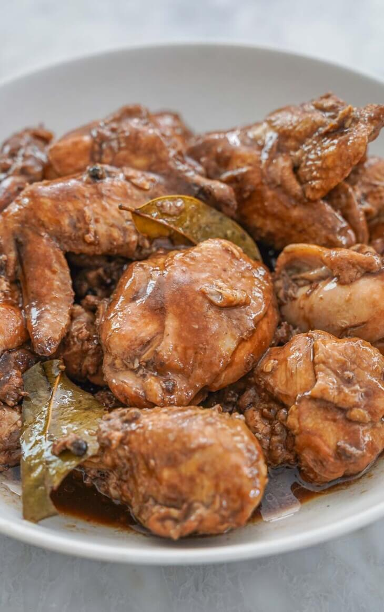

Chicken adobo comes from the old Filipino way of cooking meat with vinegar so it would keep longer. This was already being done before the Spanish arrived. The Spanish later called it adobo, from their word for marinating, but the vinegar cooking method was already Filipino. Soy sauce came later, and that mix of soy sauce, vinegar, garlic, and bay leaves became the chicken adobo many of us know today. Here is a guide on how to cook adobo that walks through the variations.